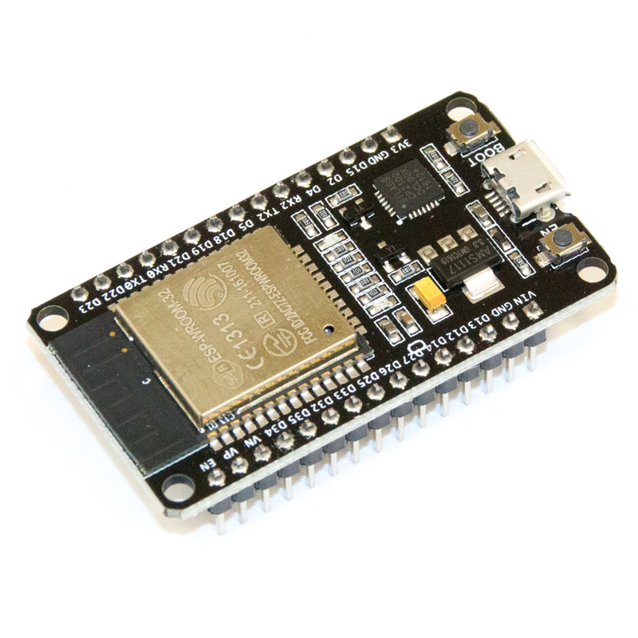
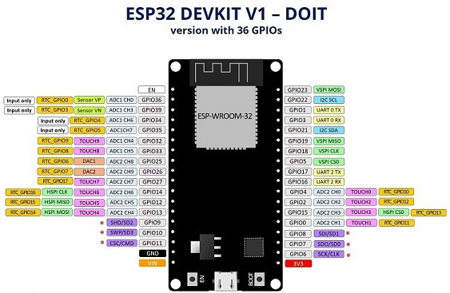
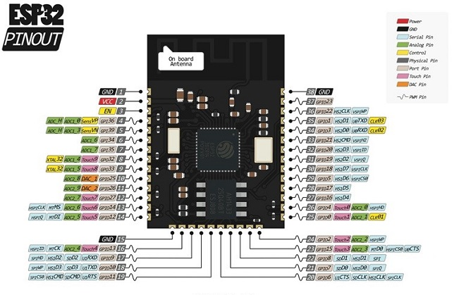
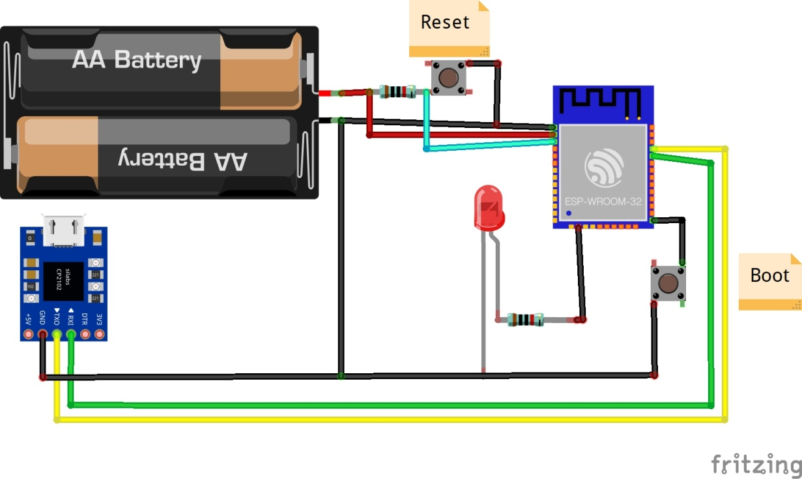

Микроконтроллер ESP32 и проекты Arduino
Микроконтроллер ESP32 – это одна из самых доступных и мощных платформ для создания умных ардуино-проектов с поддержкой WiFi. Придя на смену ESP8266, этот чип дал новые возможности для разработчиков, хотя по-прежнему остались старые проблемы с поддержкой и документацией. В этой статье вы найдете описание характеристик, распиновку микросхемы, примеры программирования с помощью Arduino IDE
Содержание [скрыть]
Описание микроконтроллера ESP32
Фирма Espressif выпустила мощный недорогой микроконтроллер ESP32 летом 2016 года. Устройство представляет собой систему на кристалле, построенную по технологии TSMC 40 нм, с Wi-Fi и Bluetooth контроллерами. Оно оснащено двухъядерным 32-битным процессором, который работает на частотах 80, 160 или 240 МГц. Также в систему интегрированы антенные коммутаторы, радиочастотные компоненты, фильтры, усилители, модули управления питанием. Подключается ESP32 к компьютеру через обычный USB провод.Модуль ESP32 NodeMCU
Технические характеристики ESP32:
Также в модуле традиционно присутствует встроенное управление энергопитанием. Для этого используются линейный регулятор, индивидуальное питание для RTC (ядро низкого энергопотребления), пробуждение по таймеру или сенсорному датчику.
Программирование модуля ESP32 может производиться на самых разных платформах, и средах, вот небольшой список наиболее популярных вариантов:
Большинство проектов реализуется на Arduino IDE и Espruino.
Хоть плата ESP32 появилась недавно, она уже активно используется в коммерческих проектах, связанных с мобильными приложениями, электроникой и задачами IoT. Например, на ее базе построен светодиодный браслет IoT группы Alibaba. Он представляет собой живой беспроводной экран, в котором каждый браслет работает как пиксель. Также на основе микроконтроллера реализована биометрическая система отслеживания посещаемости и проекты, связанные с анализом климатических условий. Имея плату ESP32 и датчики температуры, влажности и давления, можно самостоятельно собрать метеостанцию. ESP32 используется в музыкальных плеерах, помощниках с голосовым управлением, аудиогарнитуре.
Микроконтроллер оснащен 48 контактами плюс 1 большой тепловой контакт, которые обладают разными функциями. Выводы микросхемы:
Расположение выводов зависит от производителя. Например, есть плата ESP32 DEVKIT V1 DOIT, у которой 36 контактов. Распиновка представлена на рисунке ниже.Распиновка ESP32
Одним из самых популярных модулей является ESP-WROOM-32. Распиновка также приведена на картинке.Распиновка ESP WROOM 32
К портам GRIO 0, 4, 2, 15, 13, 12, 14, 27, 33 и 32 подключены сенсорные выводы. Они могут использоваться для вывода ESP32 из глубокого сна. Они фиксируют любое изменение электрического заряда.
Порты с 34 по 39 используются только для ввода информации. На них отсутствуют подтягивающие резисторы, поэтому их нельзя использовать как выходы.
На некоторых платах отображаются контакты 6-11. Они подсоединены к к интегрированной SPI flash. Их не используют в проектах.
Есть различные версии платы ESP32 размерами 5х5 мм или 6х6 мм. Также на основе ESP32 существуют модули SMT для интегрирования в другие платы.
Платформы ESP8266 и ESP32 произведены одной компанией Espressif. Микроконтроллер ESP32 отличается от своего предшественника улучшенными характеристиками, увеличенным функционалом и большим объемом памяти. Стоимость нового прибора дороже примерно в 2 раза.
Важным преимуществом ESP32 является более быстрый Wi-Fi и Bluetooth. В ESP32 установлен более мощный процессор, позволяющий реализовывать сложные проекты. Эта платформа подходит для приложений, в которых требуется интернет или новые интерфейсы. Для более дешевых разработок используется ESP8266.
Объем памяти у нового устройства ESP32 увеличен – 512 Кб против 160 Кб ESP8266. Также ESP32 отличается большим количеством выводов GRIO. К нескольким контактам на ESP32 прикреплены емкостные сенсорные датчики и датчик температуры. На обоих устройствах контакты GRIO можно использовать по-разному. ESP32 имеет 18 12-битных АЦП каналов. У его предшественника есть всего 1 10-битный вывод АЦП.
Мощность процессора значительно влияет на скорость работы. Модуль ESP32 показывает рекордную производительность по сравнению с предшественником ESP8266. Загрузка страницы с длинным скетчем и множеством графики занимает секунды.
Из недостатков ESP32 можно выделить отсутствие библиотек для поддержки сенсоров и малое количество драйверов. Это связано с тем, что плата появилась в продаже недавно. Но учитывая все преимущества микроконтроллера и его перспективы, эта проблема будет решена уже в ближайшее время.
Настройка Arduino IDE для работы с ESP32
Изначально изделия от компании Espressif поставляются с прошивкой, позволяющей работать с помощью AT команд. Это не всегда удобно, поэтому лучше программировать плату в привычной среде разработки – Arduino IDE.
Чтобы начать создавать проекты на ESP32, сначала нужно иметь его поддержку в среде разработки Arduino IDE. Поддержка в настоящий момент находится на начальном, но работоспособном уровне. Проблемы могут возникнуть с драйверами устройств, но из-за популярности модуля вскоре будет поддерживаться вся периферия.
В первую очередь нужно скачать Arduino IDE и официальную инструкцию с сайта https://github.com/espressif/arduino-esp32. Нужно загрузить файлы дистрибутива и поместить в папку C:\Users\User\Documents\Arduino\hardware\espressif\esp32.
Так как плата ESP32 новая и поддержка в среде разработки Ардуино появилась недавно, то могут возникнуть сложности с установкой. Это связано с тем, что драйвера только разрабатываются и изменен порядок расположения системных директорий. Все скетчи должны быть расположены в папке C:\Users\User\Documents\Arduino. Файлы дистрибутива должны быть размещены внутри этой папки, как советует производитель. Если этого не учесть, то поддержка в Ардуино ESP32 будет отсутствовать.
После установки можно открыть Arduino IDE. Затем нужно перейти в настройки и в менеджере плат выбрать нужную. Теперь можно прошивать модуль.
Проверка модуля и подключение к Arduino IDE
Чтобы произвести проверку работоспособности модуля, можно собрать проект с мигающим светодиодом. Для подключения потребуются:
Собирается это все согласно схеме ниже.Пример схемы ESP8266
Затем нужно загрузить тестовый код, прописав в нем номер COM порта, к которому подключен модуль, и тип платы. После загрузки скетча должен замигать светодиод.
Настройка официальной среды разработки ESP-IDF (Espressif IoT Development Framework)
Среду ESP-IDF можно установить на Windows. Для этого нужно:
После этого можно начинать работу. В каталоге \esp-idf\examples\ есть различные примеры скетчей для работы с модулем.
�